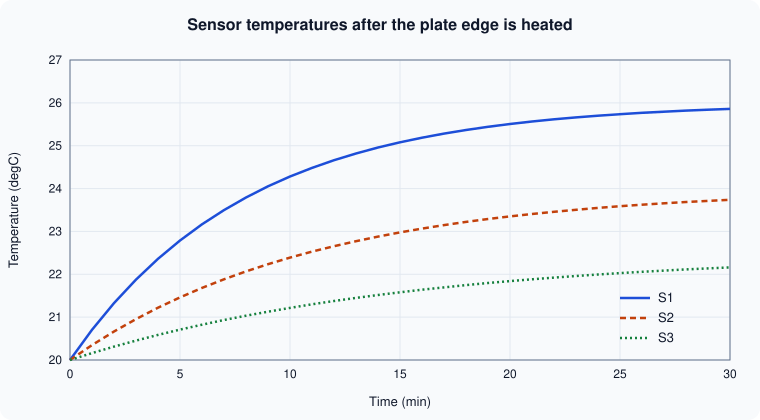

2-D Plotting
|
This content was generated with the assistance of AI and should be verified against the official documentation before being relied on in production. |
Written against MATLAB R2026b. Plotting needs a graphical environment, so the code on this page was not run in MATLAB. GNU Octave 11.3.0 was used for two things only: to compute the data behind the figure, and to check the structure of the objects that the plotting calls create (how many lines an axes holds, which scale is set). Those checks are labelled Octave 11.3.0 output; Octave’s graphics system is not MATLAB’s, so the output of a plot call itself is not claimed to match MATLAB. Everything else is not run here and was checked against the R2026b documentation.
MATLAB draws a chart by creating graphics objects: a figure holds an axes, and the axes holds the lines, bars or surfaces. The high-level functions on this page create all of them with one call and return handles to the new objects, which Graphics Objects and Customization explains. The 3-D counterparts are on 3-D Plotting and Surfaces, and saving a figure is on Exporting Figures and Images.
Terminology
-
Figure is the window (or tab, in the R2025a desktop) that holds charts. Axes is the single object that draws the x- and y-axis scales, ticks, labels and grid and holds the plotted data. A chart is an axes with its content, or a standalone object such as a pie chart that does not use axes.
-
Current figure and current axes are the ones that the next plotting call draws into. A plotting call that finds no figure creates one.
-
A series is one line, set of bars or set of markers, one entry of the legend.
-
A line specification (LineSpec) is the short string such as
"r--o"that sets the colour, line style and marker of a line. -
A tiled chart layout is a grid of axes managed by one object, created by
tiledlayout; it replacessubplot. -
A name-value argument sets a property when the object is created:
plot(x,y,LineWidth=2)(theName=Valueform is R2021a; older code writesplot(x,y,'LineWidth',2)).
A first plot
plot(x,y) draws the vectors as a line. With one vector, plot(y) plots against the index 1:numel(y).
The first examples use synthetic heating curves, 20 + a*(1 - exp(-t/tau)) with a different a and tau per sensor, so that the shape of every chart is known in advance and the calls are easy to compare. The real thermocouple log, data/sensors.csv, is plotted in Plotting the sensor log.
t = 0:30; % minutes
S1 = 20 + 6.0*(1 - exp(-t/8)); % thermocouple S1 (degrees Celsius)
plot(t, S1)
xlabel("Time (min)")
ylabel("Temperature (\circ C)")
title("Sensor S1")Not run here. The code opens a figure with one blue line that rises from 20 to about 25.9 degrees Celsius and levels off. The \circ in the label is TeX markup, which is the default interpreter for text in MATLAB charts.
Source: MATLAB documentation: plot
The syntaxes of plot that matter in practice:
| Syntax | Meaning |
|---|---|
|
Plots a vector against its index, or the columns of a matrix as separate lines. |
|
Plots |
|
Several x-y pairs in one call. Each pair is a series and gets the next colour from the colour order. |
|
A line specification such as |
|
Properties of the line objects, for example |
|
Draws into the given axes instead of the current one. |
|
Returns the line object or an array with one line per series. |
|
Plots variables of a table; see below. |
Line specifications
A LineSpec combines up to three parts in any order: a colour, a line style and a marker. Every part is optional.
| Colour | Meaning | Style | Meaning | Marker | Meaning |
|---|---|---|---|---|---|
|
red, green, blue |
|
solid (default) |
|
circle |
|
cyan, magenta, yellow |
|
dashed |
|
asterisk |
|
black, white |
|
dotted |
|
point |
|
dash-dot |
|
square, diamond, triangles, pentagram, hexagram |
A string such as "r--o" means a red dashed line with circle markers. A marker without a line style ("o") draws markers only. For colours other than the eight letters, set the Color property to an RGB triplet in the range 0 to 1, or to a hexadecimal colour code string such as "#1d4ed8". MATLAB takes the default colour of each series from the axes ColorOrder; colororder (R2019b) changes it.
Several series and hold
One plot call can draw several series, or later calls can add to the same axes. By default a new plot call replaces what is in the axes. hold on keeps the existing content and adds the new series; hold off goes back to replacing. With hold on, the colour order continues where it stopped.
t = (0:30)';
S1 = 20 + 6.0*(1 - exp(-t/8));
S2 = 20 + 4.0*(1 - exp(-t/11));
S3 = 20 + 2.5*(1 - exp(-t/15));
% One call, three series (a matrix has one column per series)
plot(t, [S1 S2 S3])
% The same chart built up with hold on, with line styles
figure
plot(t, S1, "-")
hold on
plot(t, S2, "--")
plot(t, S3, ":")
hold off
legend("S1", "S2", "S3", Location="southeast")Not run here. Both charts show three curves that start at 20 degrees; S1 rises fastest and S3 slowest. The legend entries follow the order in which the series were drawn.
The data of this example is also what the Octave check below uses.
Octave 11.3.0 (code run as written below, with legend, scale and limit calls added to check the object structure; MATLAB’s output of these calls may differ in details):
t = (0:30)';
S1 = 20 + 6.0*(1-exp(-t/8));
S2 = 20 + 4.0*(1-exp(-t/11));
S3 = 20 + 2.5*(1-exp(-t/15));
fig = figure("visible","off");
h1 = plot(t, S1, "-");
hold on
h2 = plot(t, S2, "--");
h3 = plot(t, S3, ":");
hold off
fprintf("lines on the axes: %d\n", numel(findobj(gca, "Type", "line")));
legend("S1", "S2", "S3");
xlim([5 25]);
fprintf("xlim after xlim([5 25]): %s\n", mat2str(xlim));
semilogy(t(2:end), S1(2:end)-20);
fprintf("YScale after semilogy: %s\n", get(gca, "YScale"));
loglog(t(2:end), S1(2:end)-20);
fprintf("XScale/YScale after loglog: %s/%s\n", get(gca,"XScale"), get(gca,"YScale"));
fprintf("plot with no hold replaced the lines: %d line(s)\n", numel(findobj(gca,"Type","line")));
fprintf("final temperatures: %s\n", mat2str([S1(end) S2(end) S3(end)], 4));
close(fig);Octave 11.3.0 output (a warning about Octave’s gnuplot graphics toolkit that Octave prints first is omitted):
lines on the axes: 3
xlim after xlim([5 25]): [5 25]
YScale after semilogy: log
XScale/YScale after loglog: log/log
plot with no hold replaced the lines: 1 line(s)
final temperatures: [25.86 23.74 22.16]The output shows the three rules of this section. After hold on the axes holds three lines; xlim changes the limits; semilogy and loglog set the axis scales; and a plain plot or semilogy call without hold on replaces the content. The last line gives the values the figure below shows at 30 minutes (S1 25.86, S2 23.74, S3 22.16 degrees Celsius).
Source: MATLAB documentation: hold
The sensor time series
The figure shows the three heatflow thermocouples after the plate edge is switched on. The data is the three curves of the code above, computed in Octave 11.3.0 and drawn into the SVG by a script. It is an original drawing, not an export from MATLAB: the section on exporting shows the call that would save the same chart from MATLAB.

Several axes in one figure
tiledlayout and nexttile
tiledlayout (R2019b) creates a grid of tiles and nexttile creates the axes of the next tile, returning it. The layout shares one title, one set of labels and one legend if you want, spaces the tiles automatically and lets a tile span several rows and columns.
t = (0:30)';
S1 = 20 + 6.0*(1 - exp(-t/8));
S2 = 20 + 4.0*(1 - exp(-t/11));
tl = tiledlayout(2, 1, TileSpacing="compact");
title(tl, "Heatflow sensors")
xlabel(tl, "Time (min)")
ylabel(tl, "Temperature (\circ C)")
ax1 = nexttile;
plot(ax1, t, S1)
title(ax1, "S1")
ax2 = nexttile;
plot(ax2, t, S2)
title(ax2, "S2")
linkaxes([ax1 ax2], "xy")Not run here. The figure has two stacked axes sharing one x-label and one y-label, and linkaxes makes zooming one axes zoom the other.
The syntax:
-
tiledlayout(m,n)makes a fixed grid;tiledlayout("flow")(also the default when called without sizes since R2024b) adds tiles as needed;tiledlayout("vertical")andtiledlayout("horizontal")stack tiles in one direction (R2023a). -
nexttile(span)makes a tile that spans[rows cols]tiles,nexttile(tilenum)selects a given tile, andtilenum(R2022b) reports a tile’s number. -
TileSpacing("loose","compact","tight","none") andPaddingset the gaps. R2021a gave the spacing and padding options new names, so code written for older releases can use names that the documentation now lists only for compatibility. -
A layout can hold a layout in a tile,
legendcan be placed on the layout (lgd.Layout.Tile = "east"), andexportgraphicsaccepts the layout object to save all tiles.
subplot, the older form
subplot(m,n,p) creates an axes at position p of an m-by-n grid and makes it current. It still works and is not flagged for removal, but it leaves spacing and shared labels to you, and each call can create overlapping axes if the grid arguments change. For new code use tiledlayout. Old books use subplot throughout, and the R2025a release notes also point to tiledlayout as the replacement for the removed Figure Palette tools.
Source: MATLAB documentation: subplot
Titles, labels and legends
| Function | What it does |
|---|---|
|
Title above the axes; |
|
Axis labels. The text can be a string, a character vector, a string array or cell array for several lines, or TeX or LaTeX markup via the |
|
Legend for the series, in the order they were drawn. |
|
Axis limits; |
|
Aspect ratio and limits in one command. |
|
A constant vertical or horizontal reference line (R2018b), for instance a limit temperature. |
|
Grid lines and the box around the axes. |
|
Changes the font size of the objects of a figure (R2022a). |
The Location values of legend are compass words such as "northeast" (the default), "southeast", "best" and the same with outside. Since R2024b the multi-output syntax [lgd,icons,plots,txt] = legend(___) warns and will be removed: return the Legend object only.
t = (0:30)';
S1 = 20 + 6.0*(1 - exp(-t/8));
S2 = 20 + 4.0*(1 - exp(-t/11));
p = plot(t, S1, t, S2);
p(1).DisplayName = "S1";
p(2).DisplayName = "S2";
title("Plate temperatures")
subtitle("Edge heated at t = 0")
xlabel("Time (min)")
ylabel("Temperature (\circ C)")
lgd = legend(Location="southeast");
lgd.Title.String = "Sensor";
xlim([0 30])
yline(25, "--", "Alarm limit")Not run here. The chart shows two curves with a title and a subtitle, a legend in the lower right whose title is "Sensor", and a horizontal dashed line at 25 degrees labelled "Alarm limit". Only S1 crosses the line, after about 14 minutes (where 6(1 - exp(-t/8)) reaches 5).
Axis scales
-
semilogx,semilogyandloglogplot with a logarithmic x-axis, y-axis or both. Equivalent:set(gca,"YScale","log")orax.YScale = "log"on an existing chart. Values that are zero or negative cannot be drawn on a log axis and are omitted (MATLAB can warn that it ignored non-positive data). -
yyaxis leftandyyaxis right(R2016a) give one axes two y-axes with independent scales and colours. Plot after eachyyaxiscall to put the series on that side. This replaces the legacyplotyy, which the current documentation lists as to be removed.
t = (0:30)';
S1 = 20 + 6.0*(1 - exp(-t/8));
q = 40*exp(-t/10); % heat flux through the plate edge (W/m^2)
yyaxis left
plot(t, S1)
ylabel("Temperature (\circ C)")
yyaxis right
plot(t, q)
ylabel("Heat flux (W/m^2)")
xlabel("Time (min)")Not run here. The chart has the temperature curve against the left axis and the falling heat flux against the right axis, each axis coloured like its line.
fplot: plotting a function handle
fplot(f) plots a function handle over a default interval of -5 to 5, and fplot(f,[a b]) over [a b]. It samples adaptively, so it resolves sharp features that a fixed grid would miss and needs no linspace and no vectorization of the plot call. It is the modern replacement for ezplot, which the documentation marks as not recommended. See Anonymous Functions and Function Handles for the handles.
% temperature along the centre line of a plate, one Fourier mode (illustrative)
f = @(x) 100*sin(pi*x);
fplot(f, [0 1])
hold on
fplot(@(x) 100*sin(pi*x).^3, [0 1], "--")
hold off
legend("first mode", "third power")Not run here. The chart shows a half sine wave with peak 100 at x = 0.5 and a narrower dashed curve below it with the same peak. fplot accepts a handle of one variable that returns a vector for a vector input; for parametric curves use fplot(xfun,yfun).
Source: MATLAB documentation: fplot
The chart catalogue
All these functions draw into the current axes (or ax as first argument), return handle objects, and accept the same title, label, legend and limit commands.
| Function | Draws | Notes |
|---|---|---|
|
Vertical or horizontal bars; a matrix gives grouped bars, |
Bar labels as string vectors since R2023b. A table can be passed directly since R2026a. |
|
Markers with their own size and colour. |
|
|
Filled area under a curve, stacked for a matrix. |
Tables since R2026a. |
|
Step curve that holds each value until the next sample. |
Use it for piecewise-constant data such as a sensor’s last known reading. Tables since R2022b. |
|
Vertical lines with markers, for discrete sequences. |
The x-axis limits are padded by default since R2024b. Tables since R2022b. |
|
A line with symmetric (or asymmetric) error bars. |
Matrices plot several series at once since R2022b. |
|
Bar chart of counts per bin; |
R2014b. Preferred over |
|
A line in polar coordinates. |
R2016a. It creates a |
|
Angle histogram. |
R2016b. Replaces |
|
Pie and donut charts with names and percentages. |
R2023b. They replace the legacy |
|
Box chart with median, quartiles and whiskers. |
R2020a. Tables and timetables are accepted since R2025a. The default box width changed in R2025a; specify |
|
A violin plot for each column or group; |
R2024b. |
|
A rain cloud plot for each column of the data, or for each group of |
R2026a. |
rng(1) % reproducible random numbers (not run here)
T1 = 21.5 + 0.3*randn(200, 1); % noisy readings of sensor S1
tiledlayout(1, 3)
nexttile
histogram(T1, 12)
title("histogram")
nexttile
boxchart(T1)
title("boxchart")
nexttile
errorbar(1:3, [21.5 22.1 22.4], [0.3 0.2 0.4], "o")
xlim([0.5 3.5])
xticks(1:3)
xticklabels(["S1" "S2" "S3"])
title("errorbar")Not run here. The first tile is a histogram of the 200 readings in 12 bins centred near 21.5, the second a box chart of the same values, and the third three points with error bars labelled S1 to S3. Random numbers differ between MATLAB and Octave even with the same seed, so no values are shown.
Plotting table variables
Many plotting functions take a table and variable names, which labels the axes and the legend with the variable names automatically. See Tables and Timetables.
tbl = table((0:5)', [20 21.8 23.0 23.9 24.6 25.1]', [20 20.9 21.6 22.1 22.5 22.8]', ...
VariableNames=["Time" "S1" "S2"]);
plot(tbl, "Time", ["S1" "S2"]) % x variable, then one or more y variables
bar(tbl, "Time", "S1") % tables in bar since R2026aNot run here. The first call draws two lines against Time, with the axis labelled Time and a legend of S1 and S2 generated from the variable names. A timetable works the same way with plot(tt) or plot(tt, "Temperature"), using the row times on the x-axis, and plot(tt.Time, tt.Temperature) works in every release.
The functions accepting tables include plot, scatter, stairs and stem (R2022b), boxchart (R2025a), violinplot (R2024b with grouping options extended in R2025a), and bar and area (R2026a). Since R2022b the labels keep special characters such as underscores in variable names. Before R2022b they were interpreted as TeX.
Plotting the sensor log
The heatflow log data/sensors.csv is in long format: one row per reading with the columns Time, SensorID and Temperature, the sensors S1 and S2 interleaved, and some temperatures missing (see The heatflow scenario). A long table cannot go straight to plot(tt,"Temperature"), which would draw all the sensors as one zigzag line. Read it as a timetable and draw one series per sensor:
% Not run here (MATLAB R2026b).
opts = detectImportOptions("data/sensors.csv");
opts = setvartype(opts, "SensorID", "categorical");
tt = readtimetable("data/sensors.csv", opts); % row times from Time
figure
hold on
for id = categories(tt.SensorID)'
rows = tt.SensorID == id{1};
plot(tt.Time(rows), tt.Temperature(rows), ".-", DisplayName=id{1})
end
hold off
xlabel("Time")
ylabel("Temperature (\circ C)")
legend(Location="southeast")Not run here. The x-axis is a datetime axis with date and time tick labels, there is one line per sensor with the legend entries S1 and S2 taken from the DisplayName of each line, and each missing temperature (NaN) leaves a gap in its line instead of being joined over. categories returns the sensor names as a cell array of character vectors, so the loop variable id is a 1-by-1 cell and id{1} the name. To get one column per sensor instead, unstack(tt,"Temperature","SensorID") turns the long timetable into a wide one with the variables S1 and S2; because the two sensors are read at different times, each row of the wide timetable then has a missing value for the sensor that was not read at that time, so plot it with markers or use retime first (see Timetables).
Common errors and pitfalls
The messages were not run here; the causes are documented behaviour.
-
The next
ploterases the chart. Withouthold on, a newplotcall replaces the axes content (the Octave output above shows one line left). Usehold on, one call with several series, ortiledlayout. -
Vectors of different length.
plot(x,y)errors whenxandyhave different numbers of elements (message: "Vectors must be the same length", wording varies by release). Checksize, andnumel. -
Matrix orientation. For a matrix
Y, each column is a series. A 3-by-30 matrix draws 30 lines of 3 points; transpose it. -
Legend order and missing entries.
legend("a","b")labels the series in the order they were drawn. -
Log axes and zeros. A zero or negative value cannot be placed on a log axis, so the point is dropped. Use
semilogyon strictly positive data or shift the data. -
ezplot,hist,polar,roseandplotyyin old code. They still exist in some form (plotyyis marked to be removed). Replace them withfplot,histogram,polarplot,polarhistogramandyyaxis. -
Plot edit tools.
plottools,plotbrowser,propertyeditorandfigurepalettewere removed in R2025a. To edit a chart interactively use plot edit mode and the Property Inspector, and to lay out axes usetiledlayout. -
Time on the x-axis. Plot
datetimeanddurationvalues directly: the axis shows dates and times and its limits takedatetimevalues. Do not convert todatenum.
Where older books differ
-
Interface. Books written before R2014b describe graphics handles as plain numbers and use
set(h,"Color","r"). Since R2014b a handle is an object andh.Color = "r"works too (see Graphics Objects and Customization). -
Colours. Old books show a blue-green default colour order and the
jetcolormap. R2014b introduced a new default order and theparulacolormap, and R2025a changed some default light-theme colours again and introduced the "gem" palette and a dark theme. -
Older functions.
subplot,ezplot,hist,polar,rose,pie,plotyy,hold alland the one-argumentlegendstrings are all in older books. The current equivalents aretiledlayout,fplot,histogram,polarplot,polarhistogram,piechart,yyaxis,hold onwith the colour order, andDisplayName. -
Newer charts.
piechartanddonutchart(R2023b),violinplot(R2024b) andraincloudplot(R2026a) are in no book of this age.